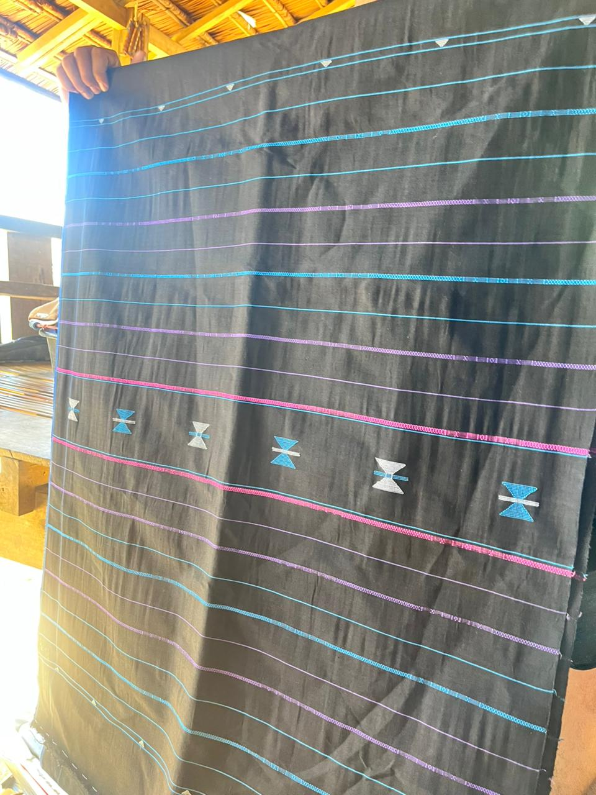

Belajar Matematika Lewat Budaya Ammatoa Kajang
Numerasi jadi lebih bermakna & membumi. Temukan harmoni antara geometri modern dan kearifan lokal Tope' Le'Leng.

Modul Aktif
Simetri Lipat dalam Tenunan
Metode Belajar Terintegrasi
Materi Kontekstual
Kurikulum matematika yang diintegrasikan langsung dengan motif kain Tope' Le'Leng dan struktur sosial Kajang.
Ensiklopedia Budaya
Jelajahi kearifan lokal suku Ammatoa melalui galeri digital interaktif yang kaya akan nilai filosofis.
Evaluasi Adaptif
Uji pemahamanmu dengan tantangan numerasi yang dirancang untuk mengasah logika dan kepekaan budaya.
Tentang Etnomatematika Tope' Le'Leng
Kain Tope' Le'Leng bukan sekadar pakaian adat bagi masyarakat Ammatoa Kajang. Di balik tenunannya yang berwarna hitam pekat, tersimpan konsep geometri, simetri, dan fraktal yang telah diwariskan turun-temurun.
Melalui KANUM, kami membedah struktur numerik di balik setiap helaian benang, membantu generasi muda memahami bahwa matematika adalah bagian tak terpisahkan dari identitas budaya mereka.
"Kamase-masea adalah filosofi hidup bersahaja yang tercermin dalam presisi matematis tenunan kami."
Siap Menjelajahi Harmoni Matematika & Budaya?
Bergabunglah dengan ribuan pelajar lainnya dan rasakan pengalaman belajar yang berbeda, mendalam, dan relevan.